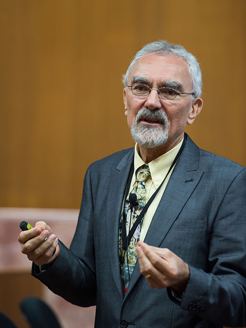
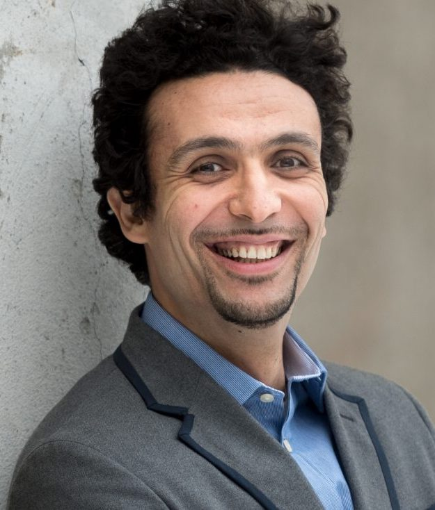

Space, Air, Ground Integrated Networking
From Single- To Multi-Component Pareto Optimization
|
Abstract: Thanks to the spectacular advances in signal processing and nano-technology, five wireless generations have been conceived over the past five decades. Indeed, near-capacity operation at an infinitesimally low error-rate has become feasible and flawless multimedia communications is supported in areas of high traffic-density, but how do we fill the huge coverage holes existing across the globe?
As a promising system-architecture, an integrated terrestrial, UAV-aided, airplane-assisted as well as satellite-based global coverage-solution will be highlighted to pave the way for seamless next-generation service provision. However, these links exhibit strongly heterogeneous properties, hence requiring different enabling techniques.
The joint optimization of the associated conflicting performance metrics of throughput, transmit power, latency, error probability, hand-over probability and link-lifetime poses an extremely challenging problem. Explicitly, sophisticated multi-component system optimization is required for finding the Pareto-front of all optimal solutions, where none of the above-mentioned metric can be improved without degrading at least one of the others...
|

Professor Lajos Hanzo
FREng, FIEEE, FIEE, DSc EURASIP Fellow
Chair of Telecommunications
School of Electronics and Computer Science
University of Southampton, UK
|
Brief Bio: Lajos Hanzo (FIEEE'04) received his Master degree and Doctorate in 1976 and 1983, respectively from the Technical University (TU) of Budapest. He was also awarded the Doctor of Sciences (DSc) degree by the University of Southampton (2004) and Honorary Doctorates by the TU of Budapest (2009) and by the University of Edinburgh (2015). He is a Foreign Member of the Hungarian Academy of Sciences and a former Editor-in-Chief of the IEEE Press. He has served several terms as Governor of both IEEE ComSoc and of VTS. He has published 2000+ contributions at IEEE Xplore , 19 Wiley-IEEE Press books and has helped the fast-track career of 123 PhD students. Over 40 of them are Professors at various stages of their careers in academia and many of them are leading scientists in the wireless industry. He is also a Fellow of the Royal Academy of Engineering (FREng), of the IET and of EURASIP. His citations can be found at https://scholar.google.com/citations?user=p0jnEW0AAAAJ
|
Connected Edge Intelligence for B5G/6G
|
Abstract: The current premise in classical ML is based on a single node in a centralized and remote data center with full access to a global dataset and a massive amount of storage and computing. Nevertheless, the advent of a new breed of intelligent devices ranging from drones to self-driving vehicles, makes cloud-based ML inadequate. This talk will present the vision of distributed edge intelligence for and over wireless networks, featuring key enablers, architectures, algorithms and some recent results in this exciting and rapidly advancing area.
|

Professor Mehdi Bennis
HEAD of ICON, IEEE Fellow
Centre for Wireless Communications
University of Oulu, Finland
|
Brief Bio: Dr Mehdi Bennis is an IEEE fellow, tenured full Professor at the Centre for Wireless Communications, University of Oulu, Finland, and head of the intelligent connectivity and networks/systems group (ICON). His main research interests are in radio resource management, heterogeneous networks, game theory and distributed machine learning in 5G networks and beyond. He has published more than 200 research papers in international conferences, journals and book chapters. He has been the recipient of several prestigious awards including the 2015 Fred W. Ellersick Prize from the IEEE Communications Society, the 2016 Best Tutorial Prize from the IEEE Communications Society, the 2017 EURASIP Best paper Award for the Journal of Wireless Communications and Networks, the all-University of Oulu award for research, the 2019 IEEE ComSoc Radio Communications Committee Early Achievement Award and the 2020-2021 Clarviate Highly Cited Researcher by the Web of Science. Dr Bennis is an editor of IEEE TCOM and Specialty Chief Editor for Data Science for Communications in the Frontiers in Communications and Networks journal.
|
Intelligent Reflecting Surface Assisted Wireless Communications
|
Abstract: The recent advances in reconfigurable wireless technology provide a new cost-effective means to enhance the performance of wireless communications systems. Intelligent reflecting surface (IRS) allows to reconfigure the propagation environment to maximize the resource utilization. In the first part of this talk, we consider the energy consumption minimization problem in an IRS-assisted federated learning system subject to training time constraint. In the second part, we consider an IRS-assisted rate splitting (RS) network to maximize the minimum user rate by jointly optimizing the active beamforming at the base station as well as the passive beamforming at the IRS. Both systems are analyzed and evaluated with simulations.
|

Professor Shiwen Mao
Earle C. Williams Eminent Scholar, IEEE Fellow
Director of WEREC
Auburn University, Auburn, AL, USA
|
Brief Bio: Prof. Shiwen Mao received his Ph.D. in electrical engineering from Polytechnic University in 2004. He is a Professor and Earle C. Williams Eminent Scholar Chair at Auburn University, Auburn, AL. His research interests include wireless networks, multimedia communications, and smart grid. He is a Distinguished Lecturer of IEEE Communications Society and IEEE RFID Council. He is a co-recipient of the 2021 IEEE Internet of Things Journal Best Paper Award, the 2021 IEEE Communications Society Outstanding Paper Award, the IEEE Vehicular Technology Society 2020 Jack Neubauer Memorial Award, and the 2004 IEEE Communications Society Leonard G. Abraham Prize in the Field of Communications Systems.
|
Hosts
 |
Sudip Misra, PhD, Fellow IEEE, FNAE, FNASc, FIET, FBCS, FRSPH, FIETE
ACM Distinguished Scientist
Alexander von Humboldt Fellow (Germany)
IEEE Communications Society Distinguished Lecturer
Professor & INAE Abdul Kalam Technology Innovation National Fellow
Department of Computer Science & Engineering
Indian Institute of Technology
Kharagpur-721302
West Bengal, India
Official Website: https://cse.iitkgp.ac.in/~smisra/
SWAN Group: https://cse.iitkgp.ac.in/~smisra/swan/
|
 |
Dr. Arijit Roy
India-France Raman-Charpak Fellow,
Former Senior Research Fellow, Council of Scientific & Industrial Research
Post-Doctoral Research Fellow
Parallel Computing and Optimisation Group
University of Luxembourg, Luxembourg
Website: www.arijitroy.info
|
 |
Dr. Ayan Mondal
Assistant Professor
Department of Computer Science and Engineering
Indian Institute of Technology Indore
Khandwa Road, Simrol, Indore 453552, India
Website: https://www.iiti.ac.in/people/~ayanm/
|
Webinar Registration
All participants need to pre-register by 5 PM (IST), January 20, 2022 by filling-up the following form: Registration Link
WebEx sign-in details will be shared with the registered participants using the email address provided in the registration form.
The Webinar flyer is available here.